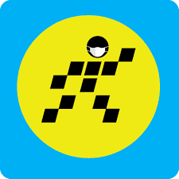

好きな広告の説明
Điện Máy Xanhスーパーは？
ベトナムの有名なスーパーです。売っているのは家電製品とテクノロジー製品だ。
有名になった理由
広告の画像は奇妙で、すごくて、物議を醸したこと。
覚えやすいキャッチフレーズを繰り返して使用したこと。
意見が分かれることを生かして、TVCの代わりにソーシャルネットワークに広告させたこと。
広告のリンク：
こちらです
詳細のリンク：
こちらです
Điện Máy Xanhスーパー の広告
（ディエン・マイ・サイン）

X
<
>